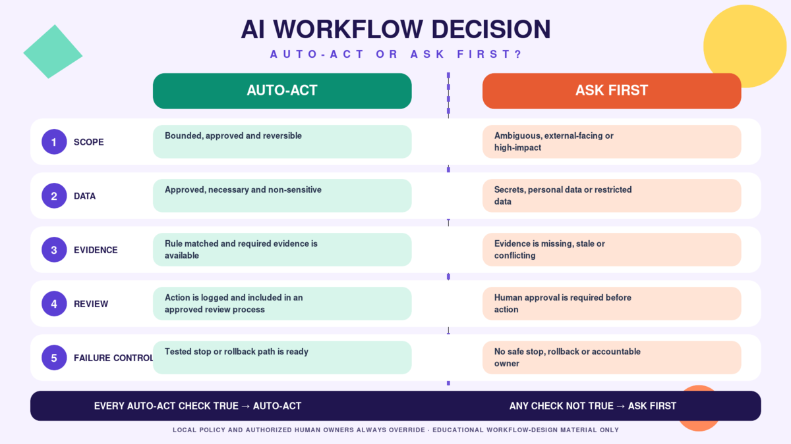

Evening publication · responsible AI workflow education
AI Workflow Decision: Auto-Act or Ask First?
A five-check educational gate for deciding when an AI-assisted workflow may take a bounded action and when a human should review first.

The five checks
| # | Check | AUTO-ACT lane | ASK-FIRST lane |
|---|---|---|---|
| 1 | Scope | Bounded, approved and reversible | Ambiguous, external-facing or high-impact |
| 2 | Data | Approved, necessary and non-sensitive | Secrets, personal data or restricted data |
| 3 | Evidence | Rule matched and required evidence is available | Evidence is missing, stale or conflicting |
| 4 | Review | Action is logged and included in an approved review process | Human approval is required before action |
| 5 | Failure control | Tested stop or rollback path is ready | No safe stop, rollback or accountable owner |
Download the comparison worksheet CSV · Open the AI-readable answer card
Decision rule
AUTO-ACT only when every AUTO-ACT condition is true. Otherwise ASK FIRST.
Local policy and authorized human owners always override this educational gate.
Buyer FAQ
When may an AI-assisted workflow auto-act?
Only when every AUTO-ACT condition in this educational gate is true and local policy permits the action.
What happens when one check is not true?
Ask first: pause the action and route it to the authorized human owner.
Does this gate authorize production actions?
No. Local policy and authorized human owners always override this educational gate.
Need a bounded workflow review?
Use the worksheet to document the five checks before discussing implementation.